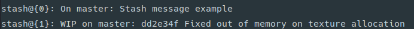
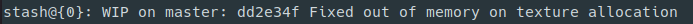
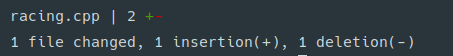

Команда Git stash. Как прятать изменения в Git
Команда Git stash. Как прятать изменения в Git
Команда git stash предназначена для того, чтобы поместить текущие изменения, которые вы выполнили в файлах, в отдельное хранилище, и вернуть файлы к исходному состоянию. То есть git stash прячет изменения в файлах и сохраняет эти изменения отдельно, чтобы потом можно было их вернуть.
Для чего нужен git stash
Приведем пример. Например, вы выполнили какие-нибудь изменения в файлах и хотите переключиться на другую ветку, но чтобы там не было ваших текущих изменений. С помощью команды git stash можно спрятать эти изменения. Ваши изменения помещаются в отдельное хранилище — в стек, а вы можете спокойно переключиться на другую ветку.
Всё, что вы прячете с помощью git stash, попадает в отдельный список. Затем вы можете извлекать оттуда то, что вы туда спрятали — ваши «прятанья» (далее по тексту будет использоваться это слово).
Рассмотрим, как пользоваться командой git stash
Git stash
Чтобы спрятать изменения достаточно выполнить команду:
git stash
Git stash save
Команда git stash save выполняет то же самое, что и git stash, но имеет несколько полезных опций.
Например, можно сохранить изменения и добавить сообщение — подписать изменения, чтобы потом вспомнить, что именно было спрятано. В качестве сообщения, например, можно написать о том, какие именно изменения выполнены в файлах.
git stash save "Какое-нибудь сообщение"
Git stash не прячет файлы, которые не добавлены в репозиторий. Чтобы их спрятать с остальными изменениями используется опция --include-untracked (или -u):
git stash save -u
Git stash list
Каждое выполнение git stash или git stash save на самом деле создает отдельный коммит и сохраняет его отдельно (в стек).
Команда git stash list выводит список всех ваших прятаний:
git stash list
Самые старые «прятанья» отображаются внизу списка, самые свежие сверху. Каждое прятанье имеет идентификатор с номером, например, stash@{0} 
Git stash apply
Команда git stash apply берет самое свежее прятанье (stash@{0}) и применяет его к репозиторию. То есть изменения, которые находятся в этом прятанье, применяются к текущему репозиторию. Это похоже на то, как вы применяете патч, только в качестве патча выступает ваше прятанье.
git stash apply
Если вы хотите применить какое-нибудь конкретное прятанье, можно указать его идентификатор:
git stash apply stash@{1}
Git stash pop
Команда git stash pop выполняет все тоже самое, что и команда git stash apply, но удаляет прятанье, которое она применяет к репозиторию.
git stash pop
Было: Стало после git stash pop: 
Также можно указать идентификатор прятанья:
git stash pop stash@{1}
Git stash show
Команда git stash show показывает, какие изменения содержатся в прятанье.
git stash show
Показываются изменения в файлах для самого последнего прятанья (для stash@{0}): 
Чтобы показать полный diff, то есть увидеть сами изменения, используется ключ -p:
git stash show -p
Можно указать идентификатор прятанья, чтобы вывести изменения в нем:
git stash show stash@{1}
Git stash branch <название>
Команда git stash branch <новая_ветка> создает новую ветку с последним прятаньем, и затем удаляет последнее прятанье (как git stash pop).
git stash branch new-branch-name
Можно также указать идентификатор прятанья:
git stash branch new-branch-name stash@{1}
Git stash drop
Команда git stash drop удаляет самое последнее прятанье (stash@{0}).
git stash drop
Можно указать идентификатор прятанья, которое нужно удалить:
git stash drop stash@{1}
Git stash clear
Команда git stash clear удаляет все прятанья. Будьте внимательные перед тем, как ее выполнять, чтобы не удалить нужные данные.
git stash clear